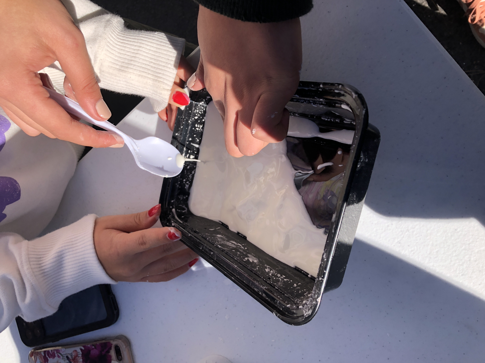

Tommy's Website

Tommy's Website
8/25/23 - In class, we created our websites and began to learn the basics of HTML. We learned how to change text (write new text, italicize, bold, change color, instert images, etc.) We were also introduced to the engineering process and safety guidelines.
9/11/23 - In class, we began learning how to CAD and we created a cup on TinkerCad. We had a challenge where we created a kitchen appliance and voted for whose was the best. We began drafting ideas for our Rube Goldberg machines and chose which design our group was going to go with. We then created the design as a CAD and began to make the pieces out of cardboard. After we were done outlining the pieces with pencil, we began to cut them out of the cardboard.

9/15/23 - After cutting out all the pieces of cardboard for our Rube Goldberg machine, we began to put it all together. There was some difficulty remembering which pieces went where because we didn't really label them, so thats definitely something we should have done. Other than that it was all working, but one of our pieces was too short so we had to fix it. That was the only real setback we had, and we finished really early. I forgot to bring the toy car, so we couldnt test it the day we finished, but I brought it on friday and we tested it. Some of the trials didnt work, as the original car we were using was too light, so it just flew down the ramp and didnt pop the balloon. We switched the car out for a heavier one, and it ended up working. Some of the trials didnt work, probably because the car was still a little too light, but out of five trial, two of them worked.
9/29/23 - We began our computer engineering unit with notes and a video with a note taker. Our challenge was making a boat that could hold scraps of metal without sinking, and the person with the heaviest boat without it sinking wins. Anushka and I didn't win but our boat didnt sink. The next thing we did was a computer dissection where we took apart an old computer from the school. It was pretty easy when we were taking it apart, but putting it back together got pretty difficult. We got stuck trying to screw the CPU back in for a while but after a couple minutes Mr Kim came over and helped us. Figuring out which wires went where was also really difficult and we spent a long time trying to figure it out. I think we figured it out, but I don't really know. But once we decided it was good enough, the disk drive was sticking up at the top because some of the wires were getting in the way. We just ended up forcing it down as far as it would go and just put the cover back on and put the computer back. After that, we colored the map of the computer and where each component was.


10-6-23 - We started our bioengineering unit by looking at slides and filling in a worksheet based on the slides. Our project for this unit was to create a prosthetic hand that can pick up an empty water bottle. Our first design was this:

This design didn't work because the top joint didn't move correctly and it wasn't big enough, so we created another design. We had help from Jeseca's friend for this design, so thank you and credit to her for helping us make it.
10-20-23 - This week we were introduced to aerospace engineering. We took notes on a slide, and then we began to brainstorm ideas for our bottle rocket project. First, we looked up some bottle rocket designs to see which ones we liked best, and then drew a sketch of the design we chose. After completing the sketch, we made our CAD of the rocket. Here is our CAD:
The CAD was a little difficult to do, and it definitely didn't look very much like the final product, but it was close enough. After turning in the CAD on google classroom, we began to create our actual bottle rocket. We used cardborn for the little flaps at the bottom, and then we used paper for the cont at the top. We took some time trying to figure out which way to put the flaps, but eventually we decided. The cone was also difficult to make for some reason. Originally we were gonna make it out of cardboard, but that didnt work, so we ended up using paper. The paper cone failed like 3 times before we actually create one that worked, and then we taped it together and hot glued it on. After everything was on, the rocket was pretty much done. We just needed to hot glue the perncil on for the rail, and we were done. We decorated the flaps with a smiley face and our initials, and then we were done. After that, we tested to see how well it would fly, and it flew pretty well I think. Here is a video of the test:
10-26-23 - This week we learned about environmental engineering. Our project for this unit was to create a filter to clean really dirty water. The bottom layer of our filter was cotton, the next layer was sand, the next layer was the small pebbles, and the top layer was the bigger pebbles. Here is some pictures of this filter:


This filter got the water pretty clean, but not fully, even after filtering it multiple times. We made a new filter out of cotton and small pebbles that we put under the original filter to make a double filter. This worked pretty well, and it got the water mostly clear. Here is some pictures of the double filter and the final product of the water:


11-3-23 - This week we started our electrical engineering unit. We started out with two slideshows, and then we did two worksheets. One worksheet was based on the slides, and the other worksheet was math based on Ohm's Law. That worksheet made me feel like I was back in physics. Anyways.. After the two worksheets, we completed two labs on tinkercad. The first lab was fairly simple, it was just creating a very basic circuit that made an LED light up. The second lab was a little more challenging. The first part was to create a circuit where the LEDs were in parallel and lit up. I misplaced some of the wires, but it was successful after I fixed it. The second part of the lab was to create a circuit that had LEDs light up in series. This one was a bit easier after figuring the first part out. Below is a picture of the first part of lab 2.
11-13-23 - This week we continued the electrical engineering unit. We did more labs. The first lab we did this week (lab 3) was just an introduction into physical circuits. This lab was set up so we would light up LEDs. There was 4 main parts to the lab. The first one was a simple LED circuit, the second was LEDs in parallel, the third was LEDs in series, and the fourth was a voltage divider. My group was kinda confused at first, but we ended up figuring all of them out. I'm actually not sure that we did the last one right because we couldnt check the resistance with the multimeter. We tried to figure it out but it didn't work. Which means we also couldn't do any of the worksheet. But anyway here is some pictures from lab 3:
After lab 3, we worked on lab 4. This lab was focused on arduino programming. We went over the basics (setup and loop), which was pretty easy for the first part of the lab, where all the LEDs blinked at the same time. I needed to ask for help for the code when we had LEDs following a pattern though. It was easy to understand and write the code after I got help though, so the rest of the patterns were really easy to input. The last one, the fade, was a little more difficult but we did end up getting it. Also apparently we did the lab wrong but here is a video of all the patterns we did:
12-1-23 - This week we started our business engineering unit. We started off with slides, and then we did a worksheet. Our project for this unit was to create a product idea and create a business pitch slideshow to present in front of the class. My group decided to do shoe warmers. They are just shoes that have heaters in them. Our slideshow was fairly sophisticated compared to other peoples in class, especially our presentation. It was pretty easy to write out all the slides, the hardest part was actually coming up with the idea, but that didn't even take that long. Below is a few slides from our slideshow:
1-10-24 -
1. Our bridge was 33.7 g
2. Our bridge held657 g
3. The ratio of the weight of the bridge to the weight held by the bridge was 21.5
4. The heaviest part of our bridge was probably the areas where the clips went to attach the bucket to the bridge. The weight was mostly from the extra glue we used to make sure the spaghetti was secure.
5. The design came mostly from pictures of bridges we saw online, some just from our memories of what bridges generally look like, especially the diagonal and straight beams that went across the bottom.
6. The design did not necessarily work as intended. Our bridge bent into a parentheses shape instead of laying out straight. Because of this, the bridge was shorter and more difficult to hold, and it probably made it more susceptible to breaking. The glue also detatched a part of the bridge from the other, so we had to reglue that about an hour before testing the bridge, so that made the bridge easier to break.
7. The point of failure was the part of the bridge where the glue detatched, which makes sense. Originally, that was not the suspected weakest point, but after the glue broke it definitely became the suspected weakest point.
8. Our bridge could have been better if we overlapped a lot of the spaghetti more, because I believe that's the reason the glue broke off of one of the parts of the bridge. Having dry glue would definitely prolong points of failure, but we unfortunatly did not have the time. I also have no idea why our bridge started bending so much, and I don't know how to fix it.
9. Below are pictures of the process of building our bridge:
10. I don't think these pictures are of our final bridge because I don't remember taking them while testing it, but here is some pictures of our first bridge:
11. Unfortunately we didn't take any videos of the bridge.
1-12-24 - This week we did our chemical engineering unit. We started off with a video, and then we went over the slides. Our project for this unit was to make oobleck. It's made with corn starch and water. The challenge was to figure out the ratio of water to corn starch. We found that it was about half to three quarters of the amount of corn starch. It was really easy and we finished it quickly, so we played with it for a little bit and then cleaned up. Here are some pictures of the oobleck:

1-29-24 - This week we started a new project where we could choose between building a mousetrap car or an arduino car. Anushka and I chose to build a mousetrap car. We looked at a couple websites and youtube videos to solidify our design. Once we finished our research, we wrote a project proposal. After the proposal, we sketched our car with measurements, and after the sketch was finished, we created a CAD of the car. Pictures of the sketch and CAD are attached below. After that, we worked on a calculations worksheet where we calculated how far the car would go.
2-9-24 - This week we started building our mousetrap. We started with cutting out the cardboard and then started gluing everything together. It was really easy and didn't take long at all, and we did a few small tests just to make sure it worked. Once we confirmed that it moved, we were finished and ready to test. Our test went really well, and the car went 35.7 feet. That was a lot more than what we originally calculated on the worksheet, which is probably because we calculated the worksheet wrong. Below is a picture of our completed first iteration:
2-26-24 - This week we began our second iteration of the mousetrap car. Our main design was pretty good so we just kept that, but we ended up making the rod and string longer. It was honestly a really easy change and it took barely 10 minutes. We tested it once right before the official test in the cafeteria, and nce we made sure it worked well, we went to the cafeteria to test it. The string was pretty long, and it barely fit onto the back axel when it was fully spun around it, but it worked. Our car went about 37 feet, which is kinda shorter than i thought it would go. I think it's because the string didnt fully unravel from the axel for some reason, and the car actually ended up going backwards a little bit. I think maybe the string might have been a little too long, but I don't really know. Below is a video of our official test:
3-4-24 - This week we started our next project, which is an egg drog. We have a lot of freedom to create our design, but there are specific materials we are going to use, like cardboard, sticks, straws, cotton balls, string, tape, and trash bags. My groups design is made out of straws, cotton balls, a little bit of cardboard, and a trash bag. The trashbag is going to be used as a parachute, and the straws will hopefully make it light enough that it won't accelerate too much as it falls to the floor. The cardboard will help keep the egg in place, and the cotton balls are there to cusion the egg when it hits the floor. Our design is mainly based on other designs we saw online. Our CAD took forever to make because we kept messing it up, but here it is: